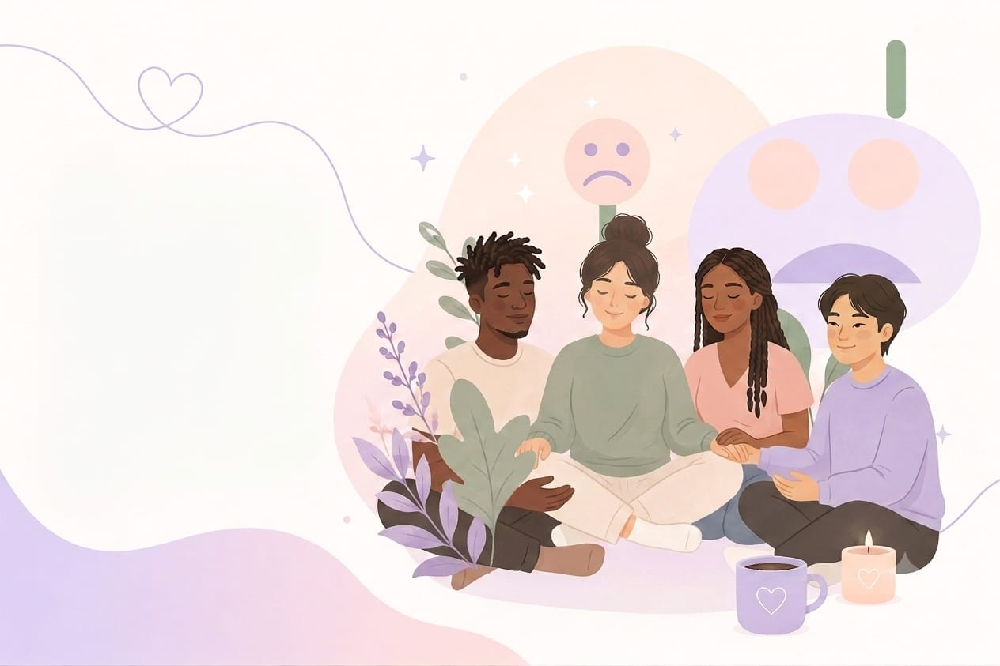

Respira profundamente durante un minuto cada vez que te sientas abrumado. Eso ayuda a tu cuerpo y mente a calmarse.
ENTRE
NOSOTROS
no estás solo, aquí te entendemos.
Un espacio seguro para hablar, escuchar y acompañarnos en el camino hacia el bienestar emocional.

🌿
Bienestar emocional
Herramientas para cuidar tu mente y corazón.
🤝
Comunidad
Un lugar para compartir, escuchar y sentirte acompañado.
📚
Recursos
Artículos, guías y recomendaciones para tu crecimiento personal.
💬
Apoyo profesional
Información y orientación para cuando más lo necesites.
Blog
Frases para acompañar tu salud mental
Encuentra pequeñas palabras de apoyo y ganas un impulso para tu bienestar.
Permítete descansar hoy sin culpas. El cuidado personal también es parte de tu crecimiento.
Escribe una cosa buena que hayas hecho o sentido hoy. Recordar lo positivo fortalece tu bienestar.
Habla con alguien de confianza o comparte tu experiencia en el foro anónimo cuando necesites desahogarte.
Arte
Comparte imágenes que te ayudan a expresarte
Sube tus dibujos, fotos o ilustraciones para inspirar a la comunidad. Todo se guarda de forma anónima en tu navegador.
Las imágenes se guardan localmente en tu navegador para que puedas verlas aquí.
Comparte tu primer arte para inspirar a otros.
Muro de publicaciones
Comparte y recibe abrazos virtuales
Publica mensajes anónimos, apoya a otros con reacciones y mantén la conexión con la comunidad.
Abrazos virtuales: 🤍
Cada usuario usa un avatar anónimo persistente para reconocerse sin revelar su identidad.
Cartas anónimas
Escribe una carta para quien la necesite
Deja una palabra amable o un mensaje de apoyo sin necesidad de apellidos.
Aún no hay cartas compartidas.
Diario privado
Tu espacio personal
Escribe lo que quieras y vuelve a leerlo cuando quieras. Solo tú lo verás en este navegador.
Tu diario se guarda en tu navegador y nadie más puede verlo aquí.
Jardín de Esperanza
Un pequeño jardín para tus ánimos
Cada comentario y carta hace crecer tu jardín. Riega tus plantas con interacciones.
0Esperanzas sembradas
BroteNivel actual
🌱
🌿
🌸
🌼